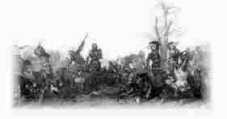

Gwaz Aotrou Gwesklen

Ton 1
Ton 2
|
1.Eur c'hastel braz ez-eus, e kreizig koadou Mal
|
25.An aotro lavare pa 'z ae maez ar porzh
" Deut-hu ganin, ma c'hoar, war lost ma marc'h-emporz ; 26.Na deomp-ni da Wengamp da gaout ma aotrou-me, Da c'houzout hag-eñ voa gwir din koll ma buhez 27.Deomp da glask da Wengamp ma aotrou-reizh Gwesklen Ma teuio da lakaat seziz war Bestien " III 28.- Gwengampiz , yec'hed deoc'h; yec'hed gant azaoue; Nag an aotrou Gwesklen pelec'h 'mañ, an' Doue ! 29.- Mard eo 'n aotrou Gwesklen , marc'heger, a askot, E sal ar varoned en tour-plad e gavot " 30.Yann eus a Bontorson pa eas tre er sal, Bet' an aotrou Gwesklen a eas diraktal : 31.- Grasoù Doue, aotroù, skoazell Doue ganeoc'h ! Hag ho skoazell gant neb a zo gwaz gwirion deoc'h. 32.- Grasoù Doue ganeoc'h, pa brezeget leal An neb hen skoaz Doue a renk skoazañ re all 33.Na pez' ezhomm ganeoc'h ? distaget ar ger krenn. - Ezhomm an neb a zeuy a-benn eus Pestien ; 34.Ennañ zo paotred Saoz , hag a wask tud ar vro, Hag a laka trubuilh ouzhpenn seizh lev war-dro ; 35.Ha kement den ya tre e lazhont heb truez ; Panevet ar plac'h-mañ me oa lazhet ivez, 36.Me oa lazhet ivez evel meur a hini ; 'Mañ 'r c'hourgleze ganin, hag hen ruz, sellet-c'hwi " 37.Gwesklen eus lavaret : " M'hen toue sent a Vreizh ! Tra vezo bev ur Saoz na vezo peoc'h na reizh 38.Ra sternet-c'hwi ma marc'h, ha ma sterner timat : M'az aimp dezhi raktal, da c'hout hag-eñ hell pad ! " IV 39.Pennarger 'c'houlenne dimeus beg ar c'hrenal Gant an aotrou Gwesklen , war zigarez farsal 40.- Daoust hag-eñ 'maoc'h-hu deut amañ d'un abadenn, Ha pa 'maoc'h-hu sternet, hag ho tud, evel-hen ? 41.- D'un abadenn omp deut, aotrou ar Saoz, heb gaoù, N'eo ket da gorolliñ, da son an hini eo ; 42.Da son ur goroll deoc'h ha n'achuo abred Kerkent ha ma vimp skuizh, arnodo an Diaouled " 43.A-benn ar c'hentañ stok ar voger zo pilet, Ha tre-betek an don ar gêr en deus krenet ; 44.A-benn an eilvet stok, dismantret teir zoural, Ha lazhet daou c'hant den ha mui pegement all ; 45.A-benn an deirvet stok, zo pilet ar persier, Hag ar Vretoned tre, ha kemeret ar gêr. 46. Diskaret eo ar gêr ; an douar kompez mat Ha kanañ ra an den zo eno oc'h arat : 47." Yann ar Saoz, evitañ da vezañ ganas fall, Na c'hounezo war Vreizh tra vezo kerrek Mal ! " |
Variantes tirées du premier carnet de collecte de La Villemarqué

|
p. 255
FRAGMENT A (26) - Margaridik matez, deomp-ni hon daou bremañ Da c'hoût hag e oa ezhomm din-me koll ma buhez. (a) - Da zigor an nor da justis ar roue. - Margaridik matez, ha n'ema ket aze? (25.2) - Ema aet: hi ganin-me war lost ma inkane. - (b) Margaridik matez, m'am bije me gouezet Te oa an kentañ den oa em ti me lazhet. (Le baleer dit cela à la servante) FRAGMENT B [Noté entre les vers 2-3 et 3-4 ci-dessus] (27) Deomp-ni trezeg Gengamp , da gaout 'n aotroù Gweskle A zeuio da lakaat seiziz war ar ger-mañ [Noté transversallement dans la marge droite:] (28) Yannik a Benn-ar-zon d'ar Gwengampiz a lare: - Nag an aotroù Glwesklé pelec'h ema dre-mañ? (29) - Mar d'eo 'n aotroù Gleské , marc'hek mad, a glaskit, Er sal ar Baroned en tour plad e kavfet. |
p. 227 FRAGMENT C Yann euz a Bontorson (30) - Ho krasoù mat, aotroù, ha skoazell Doue ganeoc'h! Hag ho skoazell ivez gant neb a glemm ouzoc'h! (32) - Ho krasoù mad, va breur, pa brezeget e leal! An neb a skoaz Doue, eñ renk skoazañ re-all. (33) - Me zo deuet d'ho pediñ da lared 'n ur ger krenn Ma teufec'h da lakaad seiziz war Pestivien . (34) Gwall dud a zo enno, hag a wask re ar vro Hag a laka strabuilh ouzhpen seizh lev a-dro. (35) Ha kement a ya tre a goll, sur, e buhez. Panevet d'ar plac'h-mañ, me oa lazhet ivez! (36) Panevet d'he azoue, evel meur-a-hini 'Ma ar gourgleon ganin hag eñ ruz. Sellit-c'hwi! (38) - Va sternit... ha sternit va ... mat! Ma eomp dezhe raktal da c'hoût hag hen gell pad. |
(39) Penn-ar-ger a c'houlenne en ur van godisal Digant an aotroù Gweskle , demeus beg an tour all. (40) - Ha deut emaoc'h amañ, aotroù, d'an abadenn Ha pe 'maoc'h-c'hwi sternet, aotrounez, evelhen. (41) - D'an abadenn eomp deuet amañ, hep lared gaou Na ren da gorolliñ, da zon an hini eo. (42) Da zon ur goroll deoc'h na echuo abred Pa vezimp skuiz ganti, erruo an diaouled. p. 228 (43) A-benn ar c'hentañ skok, an dozoù zo treuzet. Ha tre beted an don ar chastell 'neus krenet, (44) Hag a-benn an eil skok zo pilhet an doural Ha lazhet daou c'hant den ha mui pegement-all. (45) A-benn an deirvet skok ar perzhier a zo kouet Hag ar ger kemeret, dismantret ha tanet. (39) Penn-ar-ger a lare, o toned gant an hent... (47) Ha Yann ar Saoz evitañ da voud ur ganez fall Na c'houneo warnomp tra vo kerrek koat Mael ! ( Italiques : "Fragment D" et passages douteux (dubious ) ) |